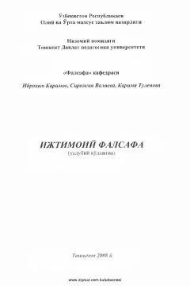

IFIjtimoiy falsafa fanining asosiy tushunchalari, vazifalari va jamiyat taraqqiyoti qonuniyatlariga bag'ishlangan o'quv qo'llanma.
Ushbu o'quv qo'llanma talabalarda ijtimoiy-falsafiy dunyoqarashni shakllantirish, jamiyat va inson taraqqiyoti qonuniyatlarini anglashga bag'ishlangan. Unda falsafa va ijtimoiy falsafaning o'zaro bog'liqligi, vazifalari hamda jamiyat hayotidagi o'rni ilmiy asosda yoritib berilgan. Qo'llanma Oliy va o'rta maxsus ta'lim vazirligi tavsiyasi asosida tayyorlangan.